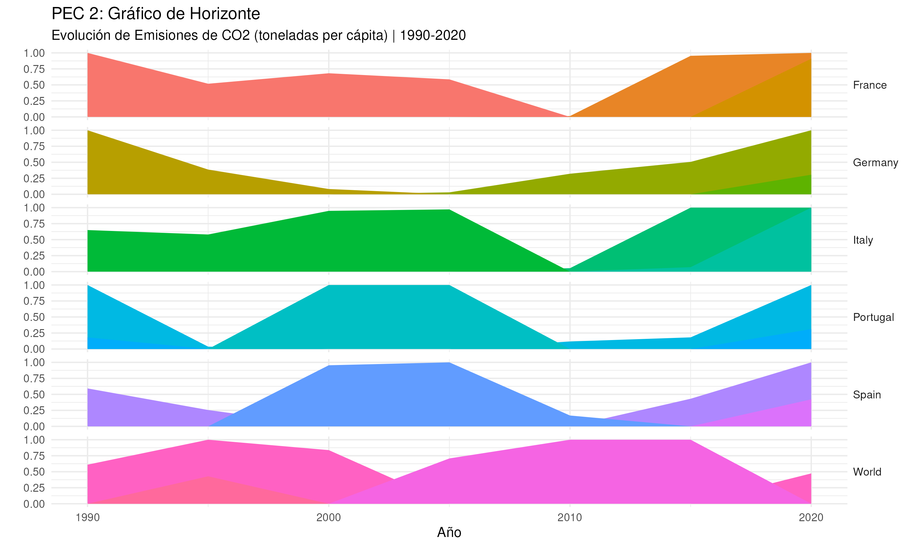

Visualización de la evolución del consumo de energía renovable en España (Datos: Our World in Data).
Ver Visualización 1 (Flourish)
Planificación de las fases del proyecto de la PEC 2 (Datos: Propios).
Ver Visualización 2 (Tableau Public)
Evolución de Emisiones de CO2 per cápita (Datos: World Bank).
(Alojado en GitHub Pages)